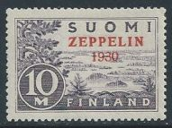
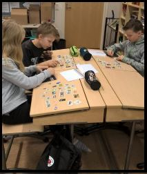

FILATELIAPSYKAN VIDEOABIKURSSIT: PSYKOLOGIAN MAAILMA -VIDEOKERTAUSKURSSI ABEILLE (vlogi) - uudet OPSit PS7 ABI KERTAUSKURSSI (opetustilanne) - VANHA OPS (OPS 2016 ja 2021): PS1 Toimiva ja oppiva ihminen PS2 Kehittyvä ihminen PS3 Tietoa käsittelevä ihminen PS4 Tunteet ja mielenterveys PS5 Yksilöllinen ja yhteisöllinen ihminen Suomi-keräilijän opas Suomi Finland wantlist Mitä mieltä postimerkkiehdotelmista? DDR-kokoelma BRD-kokoelma Aihekeräily - Luther ja uskonpuhdistus Löytölaatikko? Poltetut postimerkit! Linkkejä postimerkkeilyyn |
POSTIMERKKEILY
Kukapa meistä ei olisi pienenä poikana tai tyttönä kerännyt postimerkkejä, tulitikkuetikettejä, purukuminkuvia tai vaikka pullonkorkkeja? Näillä sivuillani luon pikakatsauksen omaan filateliaharrastukseeni. Merkkikokoelmani ei ole huikean arvokas, mutta kohtalainen. Tutustu! Kokoelmastani puuttuu vain neljä suomalaismerkkiä. Wantlist kertoo kokonaisuuden parhaiten. 
KIERSIN MUUTAMAN VUODEN ALAKOULUISSA KERTOMASSA POSTIMERKKEILYSTÄ. VASTAANOTTO OLI TOSI POSITIIVINEN. LAPSET JA NUORET INNOSTUIVAT TÄSTÄ VANHASTA HARRASTUKSESTA. JAOIN POSTIMERKKEJÄNI N. 60 eril./KOULULAINEN JA MUSTAN SÄILÖKORTIN JOKAISELLE OPPILAALLE. YRITIN NÄIN INNOSTAA NUORIA FILATELIAN PARIIN. EDELLEEN JAAN TAI LÄHETÄN MERKKEJÄ NUORILLE KERÄILIJÖILLE. JOS HALUAT OLLA TUKEMASSA TYÖTÄNI, VOIT LAHJOITTAA SINULLE TARPEETTOMAT MERKIT TÄHÄN HYVÄÄN TYÖHÖNI, OTATHAN YHTEYTTÄ SÄHKÖPOSTITSE: etunimisukunimi@outlook.fiKIITOS KAIKILLE MERKKEJÄ LAHJOITTANEILLE!! |
PÄIVITYS 18.11.2024 -- KOKO SIVUSTON PÄIVITYS
© Jyrki Rossi, 1999-2025 ---MAIL: etunimisukunimi@outlook.com
© Jyrki Rossi, 1999-2025 ---MAIL: etunimisukunimi@outlook.com